Complexidade Econômica e Desigualdade de renda
Uma Análise a Partir das Regiões Imediatas Brasileiras entre 2003 e 2023
Introdução
Delimitação do Tema
Este projeto de pesquisa se propõe a estudar a relação entre a sofisticação da estrutura produtiva e a desigualdade de renda no nível das Regiões Imediatas no Brasil no mercado de trabalho formal, através dos microdados da Relação Anual de Informações Sociais (RAIS) fornecidos pelo Ministério do Trabalho e Emprego, no período de 2003 a 2023.
A complexidade econômica captura informações sobre o nível de desenvolvimento de uma economia que são relevantes para as maneiras pelas quais uma economia gera e distribui sua renda. Além disso, (…) a estrutura produtiva de um país pode limitar sua extensão de desigualdade de renda. (Hartmann et al., 2017)
Introdução
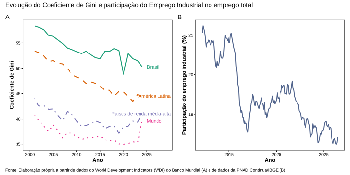
Introdução

Arcabouço Teórico
Estruturalistas
- Raul Prebisch e Celso Furtado
- Tese Centro-Periferia
- Deterioração dos termos de troca
- Mudança estrutural
- Transferência de Mão de Obra
- Industrialização como Sofisticação Produtiva
Novo Desenvolvimentismo
- Focado em países de Renda Média
- Rejeição da Poupança externa
- Doença Holandesa
- Equilíbrio dos 5 preços macroeconômicos: Taxa de juros, Taxa de Câmbio, Salários, Lucros e Inflação
- Neutralização Cambial
Complexidade Econômica
- Proposta por Hidalgo e Hausmann
- Use de Redes Complexas
- Dados de Comércio Internacional
- Índice de Complexidade Econômica (ICE)
- Diversidade
- Ubiquidade
Dialogo
- O desenvolvimento econômico como mudança estrutural
- A concepção de centro-periferia
- A doença holandesa como perda de complexidade econômica
- A perspectiva de países de renda média como medianamente complexos
- A atuação do Estado como indutor do desenvolvimento e da complexificação econômica
O que é uma região imediata?
Regiões Imediatas
A Região Geográfica Imediata é definida pelo IBGE (2017) como uma divisão regional que tem a rede urbana como seu principal elemento de referência. Elas foram estruturadas a partir de centros urbanos próximos para atender às necessidades imediatas das populações como o fluxo de pessoas em busca de trabalho, serviços de saúde, educação, compras e serviços públicos.
Rede Urbana
A rede urbana (ou rede de cidades) é o sistema articulado formado pelos centros urbanos e pelas infraestruturas de transporte e comunicação que os interligam, por onde circulam fluxos materiais e imateriais de pessoas, bens, serviços e decisões.
Características
Respeita o limite da unidade federativa e é constituída por 5 a 25 municípios e com população de no mínimo 50.000 habitantes. Se organiza ao redor de um centro urbano principal (uma cidade-polo), que pode ser um município ou um arranjo populacional (áreas conurbadas).
Vantagem
O Brasil é divido em 510 regiões imediatas que consideradas ao longo do período de 2003-2023 vão representar 10.710 observações. A análise com base em uma agregação intermediária como as regiões imediatas, que representam regiões interconectadas, pode permitir identificar oportunidades não reveladas em dados nacionais ou estaduais.
Plataforma Dataviva
ICE-R
Proposto por Freitas (2019), utiliza dados da RAIS, refletindo as capacidades produtivas presentes no território, permitindo incluir também na medida serviços não comercializáveis e manufaturas destinadas ao mercado interno.
ICA-R
Possibilita identificar a sofisticação de 670 atividades econômicas (CNAE) presentes na RAIS.
Espaço de Atividade
Construído a partir de uma adaptação do Product Space, que permite mapear a proximidade entre atividades econômicas com base na similaridade de habilidades requeridas entre diferentes setores.
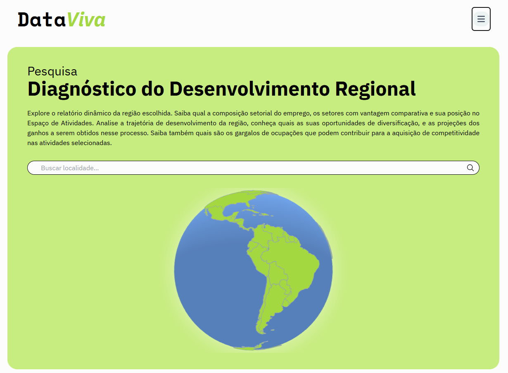
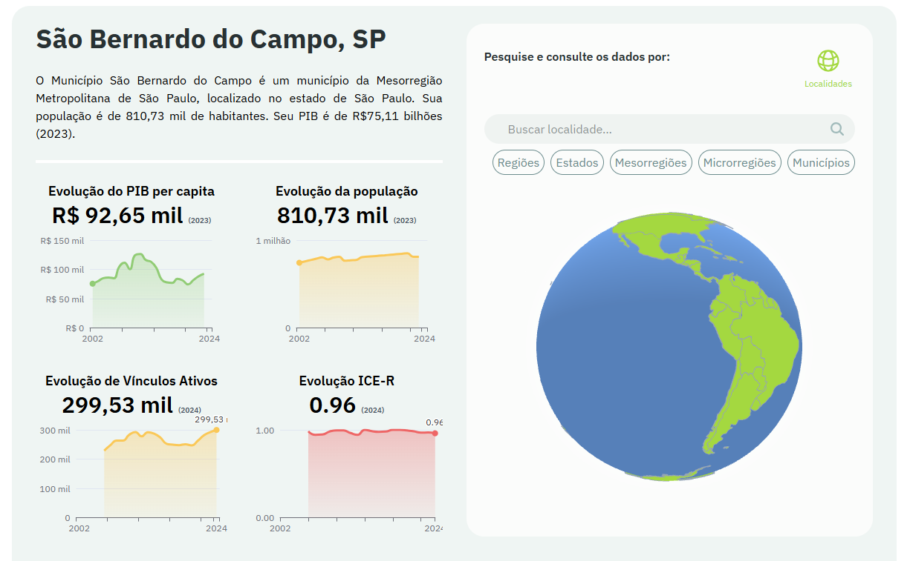
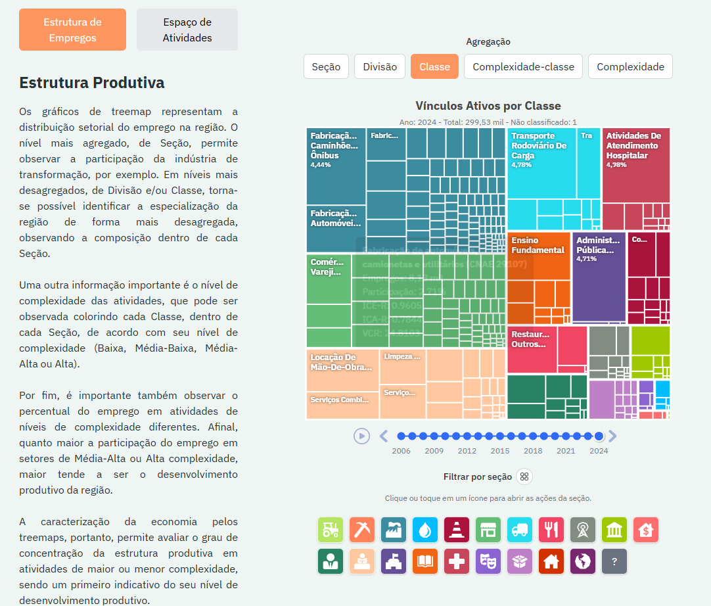
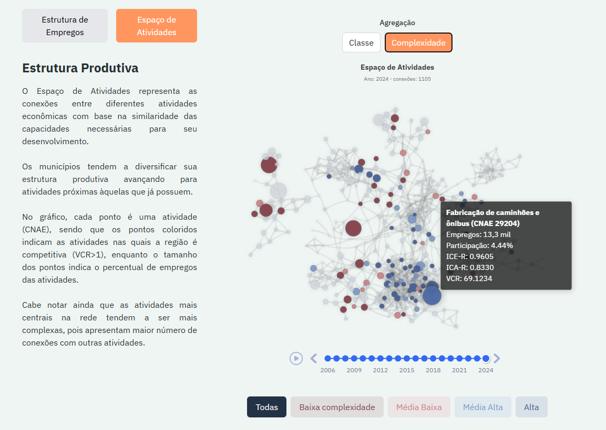
Objetivos e Hipóteses
Geral:
Apresentar o conceito de complexidade econômica e o indicador ICE-R, que traduz a sofisticação da estrutura produtiva regional. Traçar um paralelo entre a teoria da complexidade econômica e a teoria Estruturalista/Novo Desenvolvimentista, demonstrando a importância da estrutura produtiva, em especial do setor industrial, no desenvolvimento e na distribuição de renda regional. Por fim, através de dados das regiões imediatas brasileiras para o período 2003-2023, investigar a relação entre o ICE-R e o coeficiente de Gini.
Hipótese:
Partimos da hipótese de que a complexidade econômica regional se relaciona negativamente com a desigualdade de renda , ou seja, a complexidade reduz a desigualdade nas regiões imediatas no Brasil. De acordo com a literatura há evidências de que essa relação pode ser heterogênea de acordo com a região.
Revisão da Literatura
| Autores | Objetivo | Metodologia | Dados | Resultados |
|---|---|---|---|---|
| Hartmann et al. (2017) | Examinar a relação entre complexidade econômica e desigualdade de renda (Gini) entre países. | Pooled cross-sectional regression, Fixed-effects panel regression | PIB per capita e seu termo quadrático, anos de escolaridade, população, variáveis institucionais. Fontes: ECI, Gini. | A complexidade econômica (ECI) teve um efeito negativo na desigualdade de renda (Gini), indicando que maior complexidade está associada a menor desigualdade. |
| Lee e Vu (2020) | Investigar a relação entre a complexidade econômica e a desigualdade de renda (Gini), testando o efeito moderador do capital humano e riscos institucionais. | Regressão OLS cross-country (109 países) e estimador system GMM (painel dinâmico de 113 países em períodos de 5 anos entre 1965-2014). | Gini (SWIID); ECI (MIT/OEC); Capital Humano/Escolaridade (Barro e Lee, 2013); PIB per capita (Banco Mundial); Regra de Direito (Dahlberg et al., 2016). | Relação condicional: a análise OLS indicou correlação negativa (menor Gini), potencializada pelo capital humano. O modelo GMM revelou que o aumento da complexidade pode elevar a desigualdade no curto e longo prazo devido ao viés de habilidades. |
| Gosh et al. (2023) | Explorar o nexo dinâmico entre a transformação estrutural (complexidade econômica) e a desigualdade de renda sob a hipótese da Curva de Kuznets. | Análise de dados em painel dinâmico utilizando a técnica System-GMM (Generalized Method of Moments), com modelos que tratam questões de heterogeneidade e endogeneidade. | Gini (World Income Inequality Databank), PIB per capita (WDI), Índice de Complexidade Econômica (Atlas Media), Urbanização e Abertura Comercial (WDI). Abrange 65 países (1990–2015). | A complexidade econômica tem efeito negativo significativo na desigualdade (correlação negativa), melhorando a distribuição de renda. O impacto é maior em países de baixa renda. A urbanização e a abertura comercial também reduzem a desigualdade, enquanto a crise de 2008 a aumentou. |
| Bandeira Morais et al.(2021) | Verificar se a estrutura produtiva regional afeta a desigualdade de renda nos estados brasileiros. | Pooled OLS, Random-effects regression | PIB per capita e termo quadrático, anos de escolaridade, população, participação do setor agrícola, urbanização. Fontes: ECI e seu termo quadrático, Gini, Theil. | Encontrou uma relação em formato de U invertido entre a complexidade econômica e a desigualdade de renda. |
| Smolski et al. (2024) | Investigar a influência da complexidade econômica e da proximidade (relatedness) sobre a desigualdade regional de renda no Brasil. | Análise de dados de emprego para 558 microrregiões (2002-2020) utilizando regressão de painel com efeitos fixos (FE) e GMM-DIFF. | ECI, Densidade de Relatedness (RD), Gini, Densidade Populacional, Escolaridade (Superior). Fontes: RAIS (Ministério do Trabalho), IBGE e COMEXSTAT. | Relação negativa: o aumento da complexidade e da relatedness reduz a desigualdade de renda (Gini). O efeito foi mais expressivo em regiões com maior desigualdade inicial. |
| Freitas et al. (2025) | Investigar se o aumento da complexidade econômica está associado à redução da desigualdade de renda nas unidades federativas do Brasil, testando a hipótese de que a desigualdade diminui à medida que a complexidade aumenta. | Modelo linear de Efeitos Fixos (EF) e análise de termo quadrático para testar não linearidade. Foram utilizadas regressões em subamostras por quartis de renda e complexidade. | Variável dependente: Índice de Gini (PNADC/IBGE). Variável independente: Índice de Complexidade Econômica (ICE) (DataViva/Método dos Reflexos). Controles: PIB per capita (IBGE), População (IBGE), Abertura Comercial (COMEXSTAT), Capital Humano (PNAD), Gastos Governamentais (SICONFI). Período: 2012-2021. | Revelou uma correlação positiva estatisticamente significativa entre complexidade e desigualdade na amostra global (indica que regiões mais complexas são mais desiguais). No entanto, encontrou indícios de uma relação de U invertido (não linear), onde níveis muito altos de complexidade tendem a reduzir a desigualdade. |
Dados: Variáveis
| Nome da Variável | Descrição | Fonte |
|---|---|---|
| Gini | Coeficiente de Gini | RAIS |
| Theil | Coeficiente de Theil | RAIS |
| Palma | Razão de Palma | RAIS |
| Var Coef | Coeficiente de variação | RAIS |
| ICE-R | Índice de Complexidade Econômica Regional | RAIS |
| ICE-R² | ICE-R ao quadrado | RAIS |
| ln(PIBpc) | Logarítmo Natural do Produto Interno Bruto per capita (*) | IBGE |
| ln(PIBpc)² | ln(PIBpc) ao quadrado | IBGE |
| ln(População) | Logarítmo natural da População | IBGE |
| Escolaridade | Anos médios de escolaridade das pessoas com 25 anos ou mais | RAIS |
| Qualificado | Parcela da população com 25 anos ou mais com 11 ou mais anos de escolaridade | RAIS |
| Semi-qualificado | Parcela da população com 25 anos ou mais com 4–10 anos de escolaridade | RAIS |
| CNAE diversidade | Número de atividades econômicas únicas | RAIS |
| CBO diversidade | Número de ocupações únicas | RAIS |
| Parc. Agropecuária | Parcela da agropecuária no emprego | RAIS |
| Parc. Indústria | Parcela da indústria no emprego | RAIS |
| Parc. Serviços | Parcela da serviços no emprego | RAIS |
| Grau Abertura (%) | Grau de abertura para o comércio exterior | SECEX/MDIC |
Dados: Estatísticas Descritivas
| Variável | Obs. | Média | DP | Mínimo | Q25 | Mediana | Q75 | Máximo |
|---|---|---|---|---|---|---|---|---|
| Gini | 10,710 | 0.35 | 0.06 | 0.12 | 0.31 | 0.34 | 0.38 | 0.70 |
| Theil | 10,710 | 0.28 | 0.10 | 0.11 | 0.22 | 0.26 | 0.32 | 1.26 |
| Palma | 10,710 | 1.57 | 0.55 | 0.60 | 1.24 | 1.42 | 1.72 | 11.22 |
| Var Coef. | 10,710 | 1.08 | 0.41 | 0.51 | 0.88 | 1.00 | 1.16 | 8.13 |
| ICE-R | 10,710 | 0.00 | 1.00 | −2.42 | −0.70 | −0.18 | 0.51 | 4.69 |
| (ICE-R)2 | 10,710 | 1.00 | 1.90 | 0.00 | 0.09 | 0.40 | 1.07 | 22.03 |
| ln(PIBpc) | 10,710 | 2.12 | 1.09 | −0.82 | 1.34 | 2.14 | 2.93 | 5.57 |
| ln(PIBpc)2 | 10,710 | 5.66 | 4.67 | 0.00 | 1.80 | 4.57 | 8.61 | 30.98 |
| ln(População) | 10,710 | 12.22 | 0.91 | 9.97 | 11.66 | 12.12 | 12.66 | 16.91 |
| Escolaridade | 10,710 | 10.93 | 1.16 | 4.91 | 10.21 | 11.10 | 11.78 | 13.71 |
| Qualificado | 10,710 | 0.18 | 0.07 | 0.01 | 0.13 | 0.17 | 0.22 | 0.54 |
| Semi-Qualificado | 10,710 | 0.64 | 0.06 | 0.26 | 0.60 | 0.64 | 0.68 | 0.91 |
| CNAE diversidade | 10,710 | 0.00 | 1.00 | −0.91 | −0.56 | −0.27 | 0.21 | 20.43 |
| CBO diversidade | 10,710 | 0.00 | 1.00 | −0.90 | −0.52 | −0.26 | 0.18 | 17.05 |
| Parc. Agropecuária | 10,710 | 0.08 | 0.08 | 0.00 | 0.02 | 0.05 | 0.12 | 0.52 |
| Parc. Indústria | 10,710 | 0.21 | 0.13 | 0.00 | 0.12 | 0.20 | 0.29 | 0.73 |
| Parc. Serviços | 10,710 | 0.71 | 0.14 | 0.25 | 0.60 | 0.71 | 0.82 | 1.00 |
| Grau Abertura (%) | 10,710 | 14.50 | 26.02 | 0.00 | 0.65 | 6.17 | 17.47 | 338.13 |
Dados: Correlograma
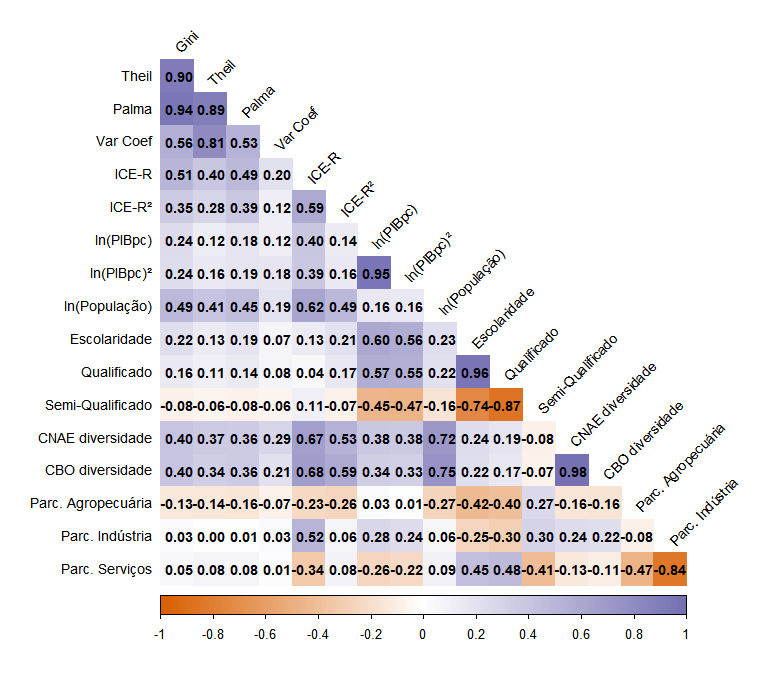
Metodologia: Efeitos Fixos
O modelo proposto para a análise é principalmente inspirado em Saia et al. (2022), e pode ser expresso na equação abaixo:
\[ gini_{it} = \alpha_{i} + \beta_{1} \text{ICE-R}_{it} + \beta_{2} \text{ICE-R}^2_{it} + \gamma X'_{it} + \mu_{i} + \delta_{t} + \epsilon_{it} \]
1 Especificação
- \(Gini\) é a desigualdade na região imediata \(i\) e no período \(t\);
- \(ICE-R\) e \(ICE-R^2\) representam a sofisticação da estrutura produtiva;
- \(X´\) é uma matriz de covariáveis;
- \(e\) é o termo erro;
- \(\mu_{i}\) captura a heterogeneidade não observada;
- \(\delta_{t}\) captura fatores específicos não observados.
2 Resultado esperado
- Esperamos que coeficiente \(\beta_{1}<0\), confirmando a hipótese de que a complexidade econômica reduz a desigualdade;
- Será avaliado se a complexidade econômica se relaciona com a desigualdade de forma linear ou não através do termo \(ICE-R^2\).
3 Controles/Fontes
Básico: ln(PIB per capta), ln(PIB per capta)², Grau de abertura (%), ln(População), Escolaridade e Parc. Agropecuária;
Estendido: Qualificado, Semi-Qualificado, CNAE e CBO diversidade e parcela de emprego na indústria e no nos serviços;
Metodologia: System-GMM
O modelo proposto para a análise é principalmente inspirado em (Bandeira Morais; Swart; Jordaan, 2021), e pode ser expresso na equação abaixo:
\[ \begin{gathered} gini_{it} = \alpha_{i} + \beta_{1}gini_{i,t-1} + \beta_{2} \text{ICE-R}_{it} + \beta_{3} \text{ICE-R}_{i,t-1} + \\ \beta_{4} \text{ICE-R}^2_{it} + \beta_{5} \text{ICE-R}^2_{i,t-1} + \beta_{6} X'_{it} + \delta_{t} + \epsilon_{it} \end{gathered} \]
1 Especificação
- Inclusão da defasagem da variável dependente \(gini_{i,t-1}\);
- Inclusão da defasagem da variável de interesse \(\text{ICE-R}_{i,t-1}\) e seu termo quadrático \(\text{ICE-R}^2_{i,t-1}\).
2 Resultado esperado
- Esperamos que coeficiente \(\beta_{2}<0\) e \(\beta_{3}<0\), confirmando a hipótese de que a complexidade econômica reduz a desigualdade;
- Será avaliado se a complexidade econômica se relaciona com a desigualdade de forma linear ou não através do termo \(ICE-R^2\) e \(\text{ICE-R}^2_{i,t-1}\).
3 Controles/Fontes
Básico: ln(PIB per capta), ln(PIB per capta)², Grau de abertura (%), ln(População), Escolaridade e Parc. Agropecuária;
Instrumentos: \(gini_{t-3}\), \(\text{ICE-R}_{t-3}\), \(ln(PIBpc)_{t-2}\) a \(ln(PIBpc)_{t-3}\), \(\text{Grau Abertura (%)}_{t-1}\) a \(\text{Grau Abertura (%)}_{t-3}\), \(ln(População)_{t-1}\) a \(ln(População)_{t-2}\), \(Escolaridade_{t-1}\), \(\text{Parc. Agro}_{t-2}\) a \(\text{Parc. Agro}_{t-3}\).
Modelo Base - EF
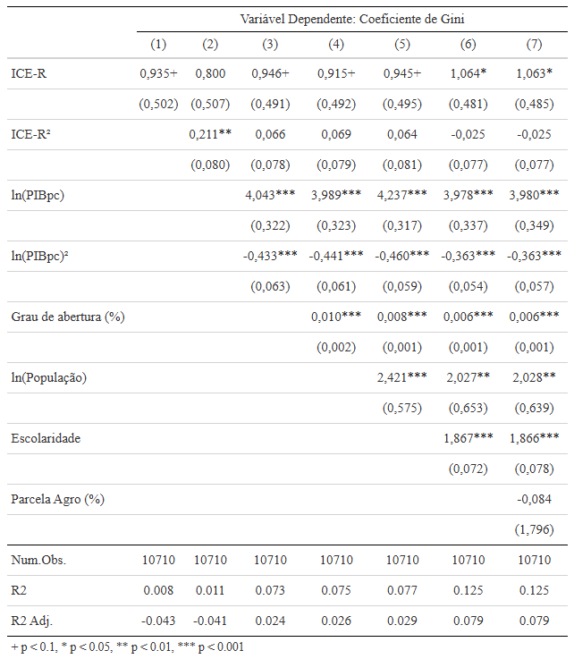
Modelo Estendido - EF
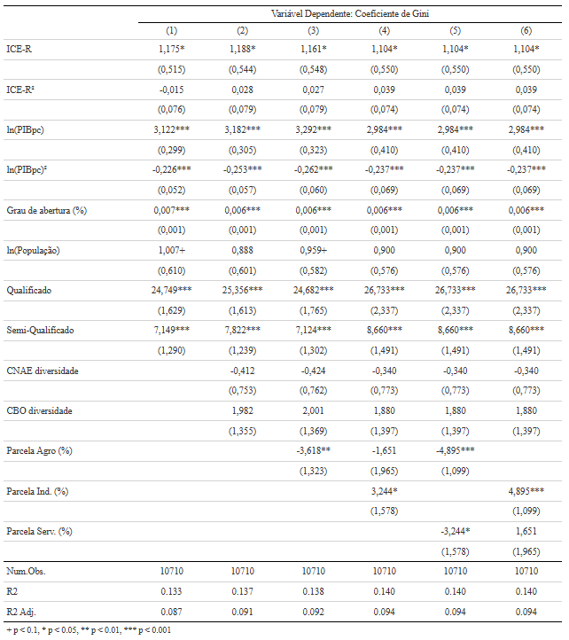
Robustez - Medidas Alternativas
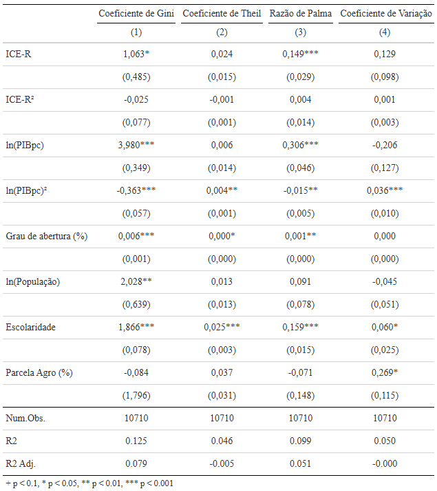
Robustez - Sub-amostras
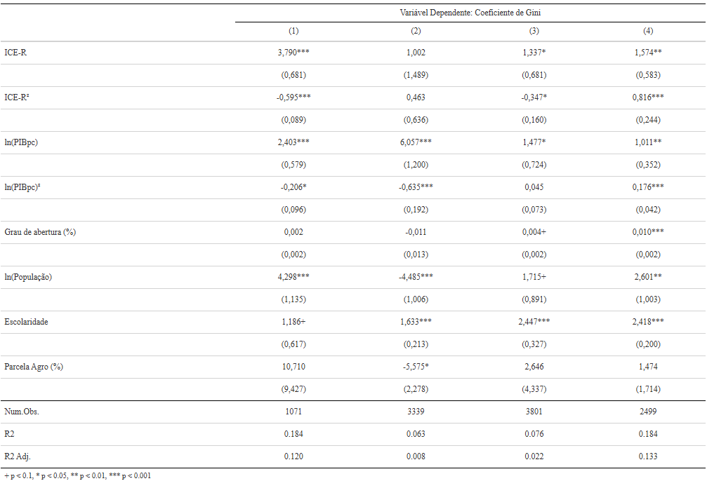
Robustez - System-GMM
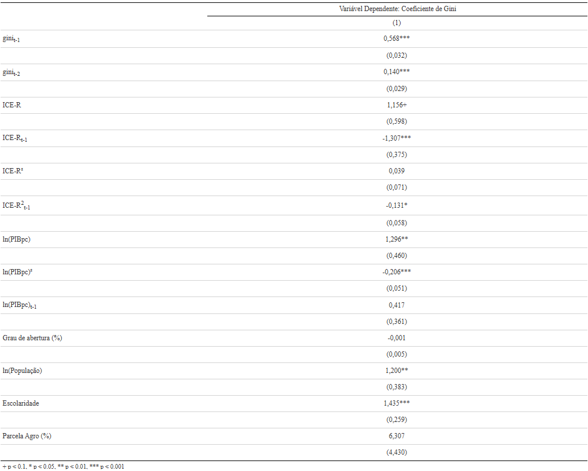
Considerações Finais
Proposta: Estudar a relação entre a complexidade econômica e a desigualdade de renda no mercado formal de trabalho nas regiões imediatas do Brasil no período de 2003 a 2023, através dos microsdados da RAIS;
Arcabouço Teórico: Estruturalismo Latino-Americano, o Novo Desenvolvimentismo e a Complexidade econômica;
Resultados Preliminares - Efeitos Fixos:
- Relação positiva entre a complexidade econômica e a desigualdade de renda;
- Resultado se manteve consistente a mudanças na especificação, a diferentes medidas de desigualdade;
- No entanto, o efeito pode ser heterogêneo a depender da amostra utilizada;
- Resultados Preliminares - Painel Dinâmico:
- A desigualdade de renda é persistente;
- ICE-R contemporâneo se manteve positivo, assim como no modelo de efeitos fixos;
- ICE-R defasado e seu termo quadrático apresentaram coeficientes negativos e estatisticamente significantes indicando que no curto prazo o aumento da complexidade pode aumentar ligeiramente a desigualdade, mas com o passar do tempo a tendência é reduzir a desigualdade de renda, comprovando a hipótese inicial.
Próximos Passos
Seção 3 do capítulo 2 apresentando do diálogo entre as escolas apresentadas como arcabouço teórico;
Capítulo 3 com a análise exploratória;
Explorar diferentes variáveis e modelos na análise empírica do capítulo 4.
Obrigado!
Qualificação - PPGECO/UFABC